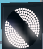
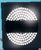
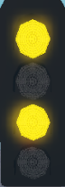
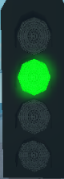

The Dispatch Overlay
The Dispatch Overlay is an overlay that shows information to a dispatcher. This overlay help him/her to see:
1.The Headcode of a train.
Headcode is a four character indentifier for a train.
The first digit shows the class of the train(which would be very important in the Dispatching priority),
The letter represents the destination of the train,
the last 2 digits represent the service number of the train which is not important to dispatchers.
2.The destination of a train
3.The Status of a train.
Which could be:
1.Arriving
2.Loading
3.Ready
4.Departing
Also very important to dispatching priority.
Dispatch GUI

The dispatch gui is the place a Dispatcher execute his/her dispatching procedure. It has similar information to the Dispatching Overlay which include:
1.The platform number of the train
2.The Headcode
3.The destination of the train.
4.The time status of the train.
5.Dispatch Platforms
Dispatch priority
This is an extremely important part of a Dispatcher's job, regulate trains.
There are 3 parts to the Dispatch priority:
1.Headcode
The table below shows the Headcorde Priority with 1 being the highest priority and 12 being the lowest priority.
| Description | Late | Ontime |
|---|---|---|
| class 9 Express / Airlink train | 1 | 2 |
| class 9 connect train | 3 | 4 |
| class 1 Express / Airlink train | 5 | 6 |
| class 1 Connect train | 7 | 8 |
| class 2 Connect / Waterline train | 9 | 10 |
| class 3 train | 11 | 11 |
2.Lateness
If multiple trains have the same Headcode priority, then the train that has more lateness have higher priority. Regardless of the arrival order.
3.Operator
If multiple trains have the same Headcode priority and the same Lateness priority then:
Express > Airlink > Connect > Waterline
Identify Red Platform Starting Signal
This is very important because if you mess this up you could ended up getting demoted.
There are 3 main ways to check if a signal is red.
1.Look at the OFF indicator

illuminated -> not Red
not illuminated -> Red
2.Look at the Banner repeater
at 45 degrees -> not Red

horizontally -> Red
3.Look at the Signal itself.
Showing a single yellow, double yellow or green aspect. -> not Red
Showing a red aspect -> Red